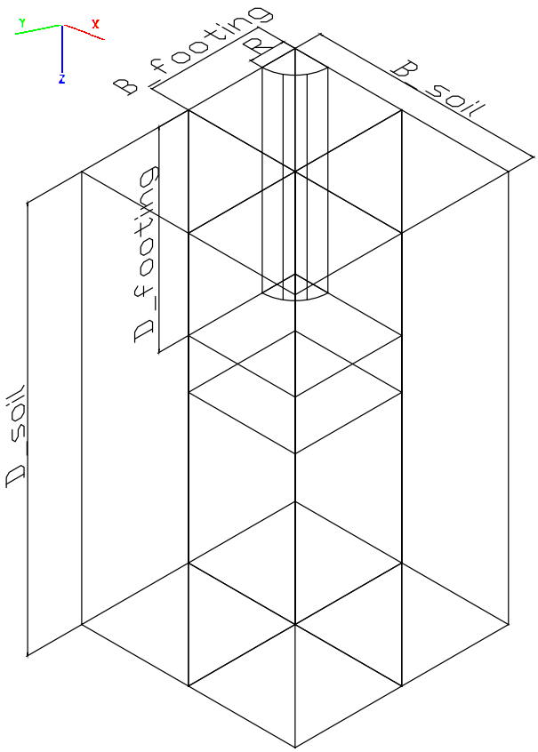
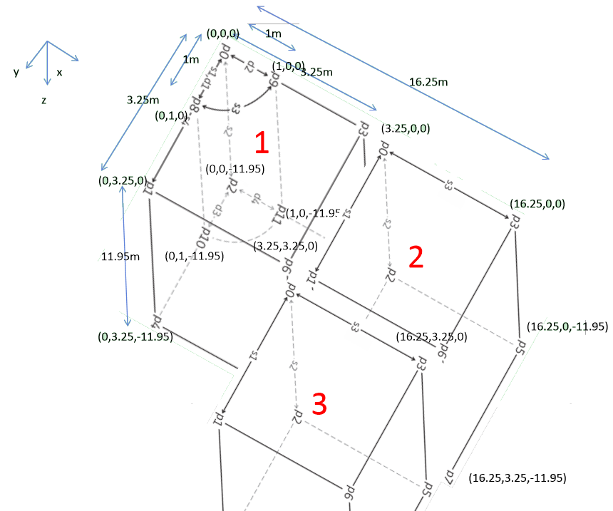
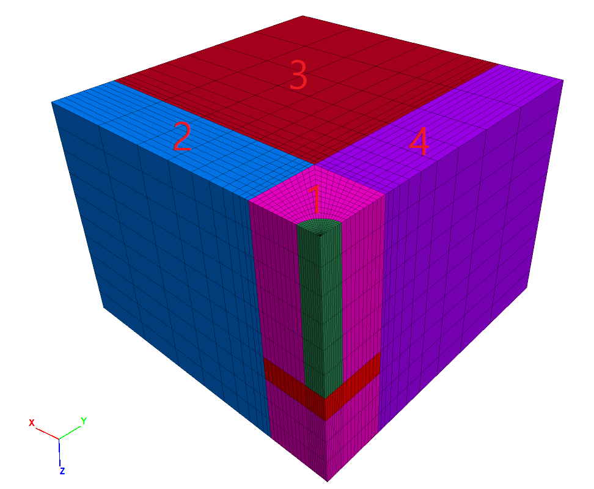
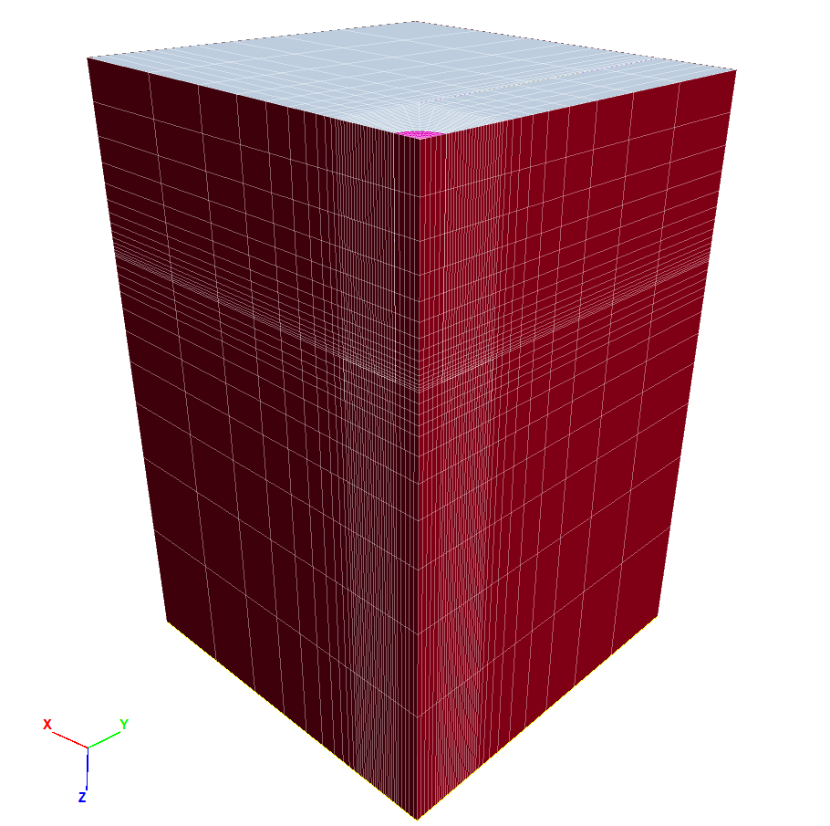
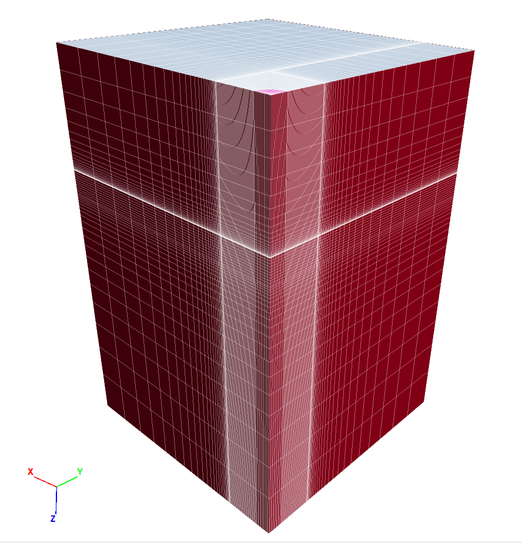

1 KAIST Model with Tran
1.1 Initial Configuration





Figure 1.1: Coarse Mesh

Figure 1.2: Fine Mesh
1.2 Code Block
############# SI UNIT ##################
####### m, Pa, kg/m3, m/s2, ##########
########################################
print(" ((((((((((((((((======== NEW RUN ========)))))))))))))))")
import itasca as it
import numpy as np
np.set_printoptions(threshold=20)
it.command("python-reset-state false")
from itasca import zonearray as za
from itasca import gridpointarray as gpa
########################################
############ PARAMETERS ################
########################################
# Mesh Details
_radial = 5
_perimeter = 5
_axial = 10
_outer = 10
# Physical Constants
_gravity = 9.80665
_K = 0.318 # 1-sin(\phi) (Jacky)
# Dimensions
_D_shaft = 1.0
_H_shaft = 7.45
_T_plate = 1.5
_B_footing = 3.25 + 0.1
_D_footing = _H_shaft + _T_plate
_B_soil = _B_footing*5
_D_soil = _D_footing + _B_footing*5
# Concrete Properties
_bulk = 4.1667e10
_shear = 1.9231e10
_density_concrete = 2400
# Soil Properties
_E_o = 80e6
_const = 1e6
_poisson = 0.3
_density_soil = 1530
_cohesion = 10
_friction = 47
# Interface Properties
_stiff_norm = 1e10
_stiff_shear = 1e10
########################################
############### ZONES ##################
########################################
command_zone = """
;;;;;;;;;;;;;;;;;;;;;;;;;;;;;;;;;;;;;;;;;;;;;;;;;;;;;;;
;;;;;;;;;;;;;;;; Upper Plate ;;;;;;;;;;;;;;;;;;;;;
;;;;;;;;;;;;;;;;;;;;;;;;;;;;;;;;;;;;;;;;;;;;;;;;;;;;;;;
model new
z crea r-c p 0 (0,0,0) ...
p 1 (0,{B_footing},0) ...
p 2 (0,0,{H_shaft}) ...
p 3 ({B_footing},0,0) ...
p 4 (0,{B_footing},{H_shaft}) ...
p 5 ({B_footing},0,{H_shaft}) ...
p 6 ({B_footing},{B_footing},0) ...
p 7 ({B_footing},{B_footing},{H_shaft}) ...
p 8 (0,{D_shaft},0) ...
p 9 ({D_shaft},0,0) ...
p 10 (0,{D_shaft},{H_shaft}) ...
p 11 ({D_shaft},0,{H_shaft}) ...
size {radial} 15 10 20 ...
rat 1 0.8 1 1 ...
fill
z crea b p 0 ({B_footing},0,0) ...
p 1 ({B_footing},{B_footing},0) ...
p 2 ({B_footing},0,{H_shaft}) ...
p 3 ({B_soil},0,0) ...
p 4 ({B_footing},{B_footing},{H_shaft}) ...
p 5 ({B_soil},0,{H_shaft}) ...
p 6 ({B_soil},{B_footing},0) ...
p 7 ({B_soil},{B_footing},{H_shaft}) ...
size {radial} 15 {outer} ...
rat 1 0.8 1.4 ;blue
z crea b p 0 ({B_footing},{B_footing},0) ...
p 1 ({B_footing},{B_soil},0) ...
p 2 ({B_footing},{B_footing},{H_shaft}) ...
p 3 ({B_soil},{B_footing},0) ...
p 4 ({B_footing},{B_soil},{H_shaft}) ...
p 5 ({B_soil},{B_footing},{H_shaft}) ...
p 6 ({B_soil},{B_soil},0) ...
p 7 ({B_soil},{B_soil},{H_shaft}) ...
size {radial} 15 {outer} ...
rat 1.4 0.8 1.4
z crea b p 0 (0,{B_footing},0) ...
p 1 (0,{B_soil},0) ...
p 2 (0,{B_footing},{H_shaft}) ...
p 3 ({B_footing},{B_footing},0) ...
p 4 (0,{B_soil},{H_shaft}) ...
p 5 ({B_footing},{B_footing},{H_shaft}) ...
p 6 ({B_footing},{B_soil},0) ...
p 7 ({B_footing},{B_soil},{H_shaft}) ...
size {outer} 15 {radial} ...
rat 1.4 0.8 1 ;purple
;;;;;;;;;;;;;;;;;;;;;;;;;;;;;;;;;;;;;;;;;;;;;;;;;;;;;;;
;;;;;;;;;;;;;;;;;;;; Plate ;;;;;;;;;;;;;;;;;;;;;;;
;;;;;;;;;;;;;;;;;;;;;;;;;;;;;;;;;;;;;;;;;;;;;;;;;;;;;;;
z crea r-c p 0 (0,0,{H_shaft}) ...
p 1 (0,{B_footing},{H_shaft}) ...
p 2 (0,0,{D_footing}) ...
p 3 ({B_footing},0,{H_shaft}) ...
p 4 (0,{B_footing},{D_footing}) ...
p 5 ({B_footing},0,{D_footing}) ...
p 6 ({B_footing},{B_footing},{H_shaft}) ...
p 7 ({B_footing},{B_footing},{D_footing}) ...
p 8 (0,{D_shaft},{H_shaft}) ...
p 9 ({D_shaft},0,{H_shaft}) ...
p 10 (0,{D_shaft},{D_footing}) ...
p 11 ({D_shaft},0,{D_footing}) ...
size {radial} 4 10 20 ...
rat 1 1 1 1 ...
fill
z crea b p 0 ({B_footing},0,{H_shaft}) ...
p 1 ({B_footing},{B_footing},{H_shaft}) ...
p 2 ({B_footing},0,{D_footing}) ...
p 3 ({B_soil},0,{H_shaft}) ...
p 4 ({B_footing},{B_footing},{D_footing}) ...
p 5 ({B_soil},0,{D_footing}) ...
p 6 ({B_soil},{B_footing},{H_shaft}) ...
p 7 ({B_soil},{B_footing},{D_footing}) ...
size {radial} 4 {outer} ...
rat 1 1 1.4 ;blue
z crea b p 0 ({B_footing},{B_footing},{H_shaft}) ...
p 1 ({B_footing},{B_soil},{H_shaft}) ...
p 2 ({B_footing},{B_footing},{D_footing}) ...
p 3 ({B_soil},{B_footing},{H_shaft}) ...
p 4 ({B_footing},{B_soil},{D_footing}) ...
p 5 ({B_soil},{B_footing},{D_footing}) ...
p 6 ({B_soil},{B_soil},{H_shaft}) ...
p 7 ({B_soil},{B_soil},{D_footing}) ...
size {radial} 4 {outer} ...
rat 1.4 1 1.4
z crea b p 0 (0,{B_footing},{H_shaft}) ...
p 1 (0,{B_soil},{H_shaft}) ...
p 2 (0,{B_footing},{D_footing}) ...
p 3 ({B_footing},{B_footing},{H_shaft}) ...
p 4 (0,{B_soil},{D_footing}) ...
p 5 ({B_footing},{B_footing},{D_footing}) ...
p 6 ({B_footing},{B_soil},{H_shaft}) ...
p 7 ({B_footing},{B_soil},{D_footing}) ...
size {outer} 4 {radial} ...
rat 1.4 1 1 ;purple
;;;;;;;;;;;;;;;;;;;;;;;;;;;;;;;;;;;;;;;;;;;;;;;;;;;;;;;
;;;;;;;;;;;;;;; Down to Bottom ;;;;;;;;;;;;;;;;;;;
;;;;;;;;;;;;;;;;;;;;;;;;;;;;;;;;;;;;;;;;;;;;;;;;;;;;;;;
z crea r-c p 0 (0,0,{D_footing}) ...
p 1 (0,{B_footing},{D_footing}) ...
p 2 (0,0,{D_soil}) ...
p 3 ({B_footing},0,{D_footing}) ...
p 4 (0,{B_footing},{D_soil}) ...
p 5 ({B_footing},0,{D_soil}) ...
p 6 ({B_footing},{B_footing},{D_footing}) ...
p 7 ({B_footing},{B_footing},{D_soil}) ...
p 8 (0,{D_shaft},{D_footing}) ...
p 9 ({D_shaft},0,{D_footing}) ...
p 10 (0,{D_shaft},{D_soil}) ...
p 11 ({D_shaft},0,{D_soil}) ...
size {radial} 7 10 20 ...
rat 1 1.4 1 1 ...
fill
z crea b p 0 ({B_footing},0,{D_footing}) ...
p 1 ({B_footing},{B_footing},{D_footing}) ...
p 2 ({B_footing},0,{D_soil}) ...
p 3 ({B_soil},0,{D_footing}) ...
p 4 ({B_footing},{B_footing},{D_soil}) ...
p 5 ({B_soil},0,{D_soil}) ...
p 6 ({B_soil},{B_footing},{D_footing}) ...
p 7 ({B_soil},{B_footing},{D_soil}) ...
size {radial} 7 {outer} ...
rat 1 1.4 1.4 ;blue
z crea b p 0 ({B_footing},{B_footing},{D_footing}) ...
p 1 ({B_footing},{B_soil},{D_footing}) ...
p 2 ({B_footing},{B_footing},{D_soil}) ...
p 3 ({B_soil},{B_footing},{D_footing}) ...
p 4 ({B_footing},{B_soil},{D_soil}) ...
p 5 ({B_soil},{B_footing},{D_soil}) ...
p 6 ({B_soil},{B_soil},{D_footing}) ...
p 7 ({B_soil},{B_soil},{D_soil}) ...
size {radial} 7 {outer} ...
rat 1.4 1.4 1.4
z crea b p 0 (0,{B_footing},{D_footing}) ...
p 1 (0,{B_soil},{D_footing}) ...
p 2 (0,{B_footing},{D_soil}) ...
p 3 ({B_footing},{B_footing},{D_footing}) ...
p 4 (0,{B_soil},{D_soil}) ...
p 5 ({B_footing},{B_footing},{D_soil}) ...
p 6 ({B_footing},{B_soil},{D_footing}) ...
p 7 ({B_footing},{B_soil},{D_soil}) ...
size {outer} 7 {radial} ...
rat 1.4 1.4 1 ;purple
"""
command = command_zone.format(
D_shaft = _D_shaft,
H_shaft = _H_shaft,
B_footing = _B_footing,
B_soil = _B_soil,
D_soil = _D_soil,
D_footing = _D_footing,
D_soil2 = _D_soil2,
radial=_radial,
axial = _axial,
perimeter = _perimeter,
outer = _outer)
it.command(command)
print(" ======== PASSED ZONES ========")
########################################
################ GROUPS ################
########################################
p = za.pos()
x,y,z = p.T
shaft = reduce(np.logical_and, (np.sqrt(x**2+y**2)<_D_shaft, z<_H_shaft))
plate = reduce(np.logical_and, (x<_B_footing,y<_B_footing, z>_H_shaft,z<_D_footing))
za.set_group(shaft, "shaft")
za.set_group(plate, "plate")
print("radial mesh number is ", _radial)
print(it.zone.count(), "zones in whole model")
print(za.in_group("shaft").sum() + za.in_group("plate").sum(), "zones in shaft+plate group.")
print(" ======== PASSED GROUPS ========")
########################################
######## CONSTITUTIVE MODEL ############
########################################
command_zone = """
zone cmodel assign mohr-coulomb range group ...
'Radial cylinder1' or ...
'Radial cylinder9' or ...
'plate' or ...
'shaft' or ...
'brick2' or ...
'brick3' or ...
'brick4' or ...
'brick6' or ...
'brick7' or ...
'brick8' or ...
'brick10' or ...
'brick11' or ...
'brick12'
; assign soil properties
zone property young {E_o_} ...
poisson {poisson_} ...
density {density_soil_} ...
cohesion {cohesion_} ...
friction {friction_} ...
flag-brittle true
; let modulus depends on depth
fish define fname(E_o,const)
loop foreach pnt zone.list
z_depth = zone.pos.z(pnt)
E = E_o+const*math.sqrt(z_depth)
zone.prop(pnt,'young')=E
end_loop
end
@fname({E_o_},{const_})
"""
command = command_zone.format(
E_o_=_E_o,
const_=_const,
poisson_=_poisson,
density_soil_=_density_soil,
cohesion_ = _cohesion,
friction_ = _friction,
bulk_=_bulk,
shear_=_shear,
density_=_density_concrete)
it.command(command)
print(" ======== PASSED CONSTITUTIVE MODEL ========")
########################################
############# INTERFACE ################
########################################
command_zone = """
zone interface 'interface 1' create by-face separate range group 'plate' ...
group 'Radial cylinder1' or ...
'brick2' or ...
'brick3' or ...
'brick4' or ...
'brick6' or ...
'brick7' or ...
'brick8' or ...
'brick10' or ...
'brick11' or ...
'brick12'
zone interface 'interface 2' create by-face separate range group 'shaft' ...
group 'Radial cylinder1' or ...
'brick2' or ...
'brick3' or ...
'brick4' or ...
'brick6' or ...
'brick7' or ...
'brick8' or ...
'brick10' or ...
'brick11' or ...
'brick12'
zone interface 'interface 1' node property ...
stiffness-normal {stiff_norm_} ...
stiffness-shear {stiff_shear_} ...
friction {friction_} ...
cohesion {cohesion_}
zone interface 'interface 2' node property ...
stiffness-normal {stiff_norm_} ...
stiffness-shear {stiff_shear_} ...
friction {friction_} ...
cohesion {cohesion_}
"""
command = command_zone.format(
stiff_norm_=_stiff_norm,
stiff_shear_=_stiff_shear,
friction_ = _friction,
cohesion_ = _cohesion)
it.command(command)
print(" ======== PASSED INTERFACE ========")
########################################
######## BOUNDARY CONDITIONS ###########
########################################
it.command("""
zone face skin
;zone gridpoint fix velocity-x 0 ...
zone face apply velocity-normal 0 ...
range group 'West2' or 'East3'
;zone gridpoint fix velocity-y 0 ...
zone face apply velocity-normal 0 ...
range group 'South3' or 'North3'
zone gridpoint fix velocity (0,0,0) range group 'Top2'
""")
print(" ======== PASSED BOUNDARY CONDITIONS ========")
########################################
############# INITILIZE ################
########################################
it.command("""
model gravity 0 0 {gravity_}
zone initialize-stress ratio {K_}
zone interface 'interface 1' node initialize-stresses
zone interface 'interface 2' node initialize-stresses
zone ratio local
model solve ratio 1e-5
model save 'initialization'
""".format(gravity_=_gravity, K_ = _K))
print(" ======== PASSED INITIAL EQUILIBRIUM ========")
########################################
########## VERTICAL LOADING ############
########################################
top = reduce(np.logical_and, (np.sqrt(x**2+y**2)<_D_shaft, z==np.amin(z)))
za.set_group(top, "top")
print(za.in_group("top").sum(), "zones in top group.")
command_zone ="""
; assign concrete properties
zone cmodel assign elastic range group 'shaft' or 'plate'
zone property bulk {bulk_} ...
shear {shear_} ...
density {density_} range group 'shaft' or 'plate'
zone initialize state 0
zone gridpoint initialize displacement (0,0,0)
zone gridpoint initialize velocity (0,0,0)
; apply displacement to top
zone face apply velocity-normal 1e-5 range group 'top'
history interval 100
zone history name 'disp' displacement-y position (1,7.46,1)
; find gridpoints of structure, store in map called cap
fish define find_cap
global cap = map
loop foreach local zone zone.list
if zone.isgroup(zone,'topplate') then
cap(zone.id(zone)) = zone
endif
endloop
end
fish history name 'cap' @find_cap
fish define vert_load
local yftot = 0.0
loop foreach zone cap
yftot = yftot + zone.stress.int(zone)
end_loop
vert_load = -yftot
end
fish history name 'top_sum_stress' @vert_load
model largestrain true
model step 3000
model save 'vertical-loading'
"""
command = command_zone.format(
bulk_=_bulk,
shear_=_shear,
density_=_density_concrete)
it.command(command)
print(" ======== PASSED VERTICAL LOADING ========")